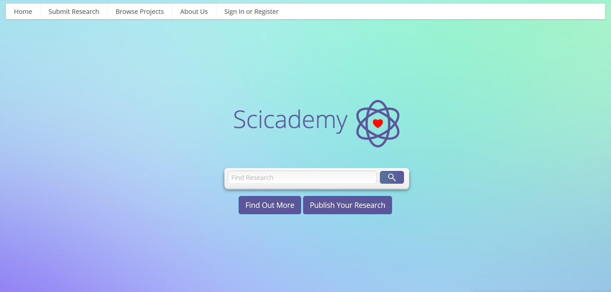

<div class="container bg-body p-5">
    <div class="row g-5">
        <div class="col-md-7">
            <div class="owl-carousel portfolio_owl_slider">
                <div>
                    
                </div>
            </div>
        </div>
        <div class="col-md-5">
            <h2 class="fs-3 mb-5">Scicademy</h2>
            <div class="portfolio-content mb-5">
                <p class="text-secondary">Scicademy was a science research database for high school students. High school
                    students do research and present at science fairs, but after that their research is never seen
                    again. With Scicademy, we aimed to solve that.</p>
                <p class="text-secondary">This was my first entrepreneurial endeavor and how I got into web development.
                    I worked on this project with a friend in 10th & 11th grade. I did full stack work using jQuery,
                    NodeJS, and MongoDB</p>
            </div>
            <ul class="list-group list-group-flush">
                <li class="list-group-item">
                    <span class="fw-bold">Source Code: </span><a href="https://github.com/jeshaitan/Scicademy"
                                                                 target="_blank">GitHub</a>
                </li>
                <li class="list-group-item">
                    <span class="fw-bold">Stack: </span>jQuery, NodeJS, Express, and MongoDB.
                </li>
                <li class="list-group-item">
                    <span class="fw-bold">Other Resources: </span><a
                        href="https://theislandnow.com/news-98/great-neck-south-high-students-launch-science-research-database/"
                        target="_blank">Local Media Coverage</a>
                </li>
            </ul>
        </div>
    </div>
</div>